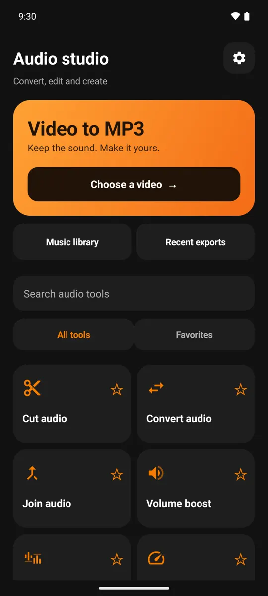
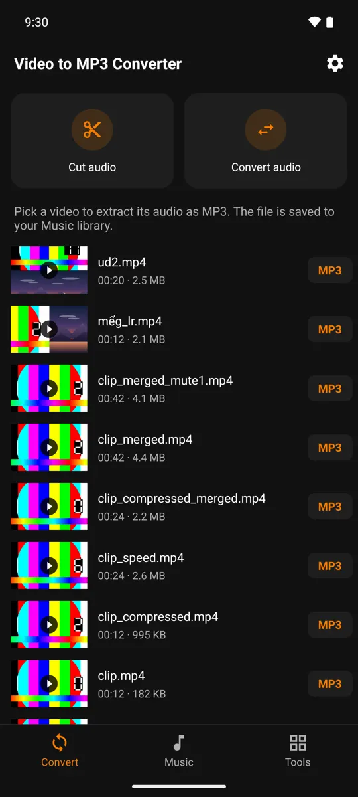

Bookmark favorite tools in Sound Studio
If you often split audio and then cut or edit tags, you might prioritize those tools on Audio Studio. Favorites are a way to navigate to available tools. It does not create an automatic processing chain for your files.
What you will do
Use the favorite tool in Video MP4 to MP3 Converter to return to frequently used operations and reduce search time.
Steps
- Open Sound Studio and find commonly used tools.
- Use the favorite bookmark control on the tool card.
- Return to your favorite group to open tools from a more convenient location.
- Uncheck rarely used items to keep the list compact.




Choose according to what you do regularly
A short list of a few repetitions is more useful than checking them all. You can choose according to the actual process, such as separating audio, trimming and sharing. Each tool still opens its own source selection screen and can be customized as needed.
Frequently asked questions
Does marking as favorite unlock features that require Premium?
No. It just changes the way of access; The conditions of use of the tool remain the same.
Before you start
Advanced options, export quality or the number of files in one run may use credits or Premium. Check the details on the action screen before running; the interface can vary slightly by version and language.
Media processing happens on your device. Ads and purchases may use a network connection; see the privacy policy for details.
Get the app Video MP4 to MP3 Converter